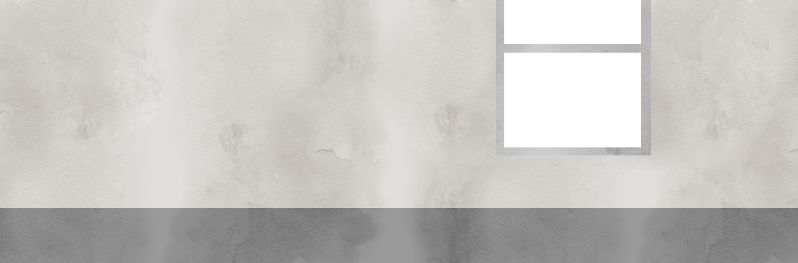
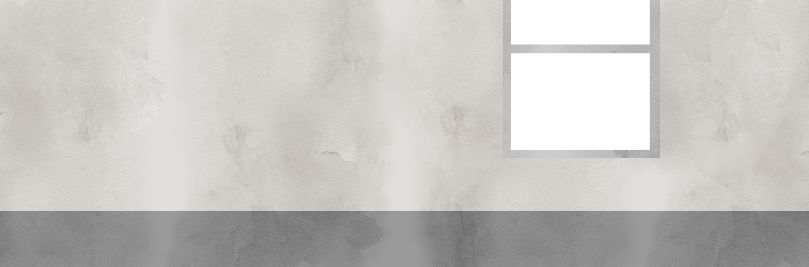

HAH! GESCHAFFT!
ENDLICH STUDENT!
OMG!!!
YES!!1!
STUDENT-STATUS!
Aber jeder Einstieg ist schwer. Besonders dieser!
Das Studium ist etwas komplett anderes als deine vorherige Arbeit oder Schule. Mehr Stress, weniger Zeit, aber auch 'ne Menge Spaß und viel Interessantes!

Such dir Kommilitonen, mit denen du klar kommst!
Kommilitonen sind existenziell! Von ihnen bekommst du wichtige Informationen, die nicht offiziell gesagt wurden oder du kannst dir Mitschriften aus der Vorlesung geben lassen, die du verpasst hast! Aber denk immer daran: Geben ist besser als nehmen!


 



Lerngruppen, Einzelgänger
oder Bücherwurm
Dabei solltest du nicht auf deine Kommilitonen verzichten!
Jeder hat auf anderen Gebieten großes Wissen, was er mit dir
oder du mit ihnen teilen kannst. Aber auch hier: Es liegt an dir,
wie du am besten zurecht kommst.


Urlaub ist drin!
aber sei darauf gefasst, dass du dennoch viel zu lernen und
nachzuholen hast!
wenn du das Studium in Regelstudienzeit abschließen willst!
SOMMER SONNE SONNENSCHEIN